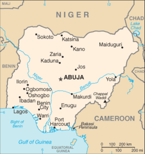

Nigéria , oficialmente República Federal da Nigéria (em inglês: Federal Republic of Nigeria), é uma república constitucional federal que compreende 36 estados e o Território da Capital Federal. O país está localizado na África Ocidental e compartilha fronteiras terrestres com a República do Benim a oeste; com Chade e Camarões a leste e com o Níger ao norte. Sua costa encontra-se ao sul, no Golfo da Guiné, no Oceano Atlântico.
Sua capital é Abuja, e sua cidade mais populosa é Lagos.
O país tem sido identificado como uma potência regional no continente africano, com particular hegemonia sobre a África Ocidental.[9][10][11] Em 2013, o seu produto interno bruto (PIB) se tornou o maior da África, com mais de 500 bilhões de dólares, ultrapassando a economia da África do Sul e chegando ao posto de 26ª maior economia do mundo.
| Área Ocupada | População (2019) | PIB |
| 923 768 km² | 199 315 249 | 397,3 bilhões USD |
A Nigéria oferece um sistema educacional livre e sustentado pelo governo, mas a freqüência não é obrigatória em qualquer nível educacional e certos grupos, como os nômades e os deficientes, são sub-atendidos. O sistema de ensino é composto por seis anos de ensino primário, três anos do ensino secundário geral, três anos de escola secundária superior e quatro anos de ensino universitário que leva a um grau de bacharel.
A Nigéria reorganizou seu sistema de saúde desde a Iniciativa Bamako de 1987, quando métodos baseados na comunidade foram formalmente promovidos para aumentar a acessibilidade de medicamentos e serviços de saúde à população, em parte, através da implementação de taxas moderadoras.[61] A nova estratégia aumentou drasticamente a acessibilidade para a comunidade através da reforma da saúde, o que resultou em uma prestação mais eficiente e equitativa dos serviços médicos. A estratégia de uma abordagem abrangente foi estendida a todas as áreas de assistência médica, com melhora posterior nos indicadores de saúde e melhoria na eficiência dos custos e dos cuidados de saúde.
O sistema de saúde nigeriano é constantemente confrontado pela escassez de médicos, o que é conhecido como "fuga de cérebros", devido ao fato de que muitos médicos nigerianos altamente qualificados emigraram para a América do Norte e a Europa. Em 1995, estimava-se que 21 mil médicos nigerianos estavam trabalhando apenas nos Estados Unidos, o que é aproximadamente o mesmo que o número de médicos que trabalham no serviço público do país. Mantendo esses profissionais treinados foi identificado como uma das metas do governo.
A indústria cinematográfica nigeriana é conhecida como "Nollywood" e é a segunda maior produtora de filmes do mundo. Muitos dos estúdios de cinema estão sediados em Lagos e Enugu e a indústria é agora uma renda muito lucrativa para essas cidades. O cinema nigeriano é a maior indústria de cinema do continente africano em termos de valor e em número de filmes produzidos por ano. Apesar dos filmes nigerianos serem produzidos desde a década de 1960, a melhora das tecnologias de filmagem e de edição digital de vídeo, que se tornaram mais acessíveis, estimulou a indústria cinematográfica do país. O nome Nollywood é do termo Hollywood, da mesma maneira como Bollywood.